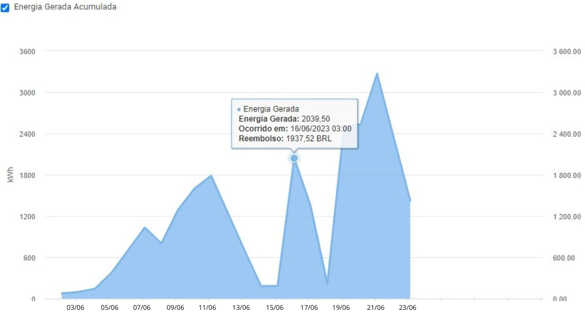

Quem somos?
Estar localizado entre as belezas naturais de Campos do Jordão nos motiva a ser um restaurante sustentável e a lutar pela preservação e uso consciente da biodiversidade. Por isso, aqui no Dona Chica nos preocupamos muito com o meio ambiente e tomamos medidas para minimizar o impacto ambiental das nossas ações.
Durante sua experiência na gastronomia artesanal e a proximidade com a natureza, irá perceber algumas de nossas atitudes sustentáveis. Primeiramente, nosso espaço foi pensado seguindo as características rústicas do local e tentamos interferir minimamente no ambiente ao entorno, respeitando as características naturais do Horto Florestal.
Quer acompanhar o monitoramento de geração de energia em tempo real? Acesse:
Login: p557@abpsolar.com.br
Senha: Donachica123
Monitoramento de energia gerada

Nossas ações sustentáveis
Energia solar
Também conhecida como energia limpa, a energia solar permite a produção de energia elétrica através de um recurso renovável, a luz solar. Aqui na Dona Chica investimos em energia solar com a ajuda da @abpenergiasolar, que contribuiu para a nossa economia e a preservar a manutenção sustentável do planeta em que vivemos.
Reciclagem
O restaurante não utiliza plásticos, como canudos, sacolas e descartáveis, reciclamos todo o óleo de cozinha e seu lixo inorgânico, e usamos apenas garrafas retornáveis.
Limpeza das águas
Para minimizar o consumo de água, nas mesas não se encontram toalhas, mas jogos americanos de papel que são reciclados após o uso. Os utensílios são de material resistente como travessas de ágata e vidro semi-temperado, para se forem lascados, em vez de descartados são lixados.
Horta
Fazemos a reciclagem do nosso lixo orgânico, transformando as sobras do restaurante em adubo natural, que utilizamos na nossa horta e jardins, substituindo o uso de produtos químicos. Contribuindo também para a redução do aquecimento global.

Compostagem
Fazemos a reciclagem do nosso lixo orgânico, transformando as sobras do restaurante em adubo natural, que utilizamos na nossa horta e jardins, substituindo o uso de produtos químicos. Contribuindo também para a redução do aquecimento global.
Cuidar da natureza é cuidar de nós mesmos! Somos partes dela!
A Dona Chica junto a ABP Solar acreditam que cada ação conta e esperamos ter você como parceiro(a) em nossa missão de transformar a maneira como utilizamos a energia. Juntos, podemos fazer a diferença!